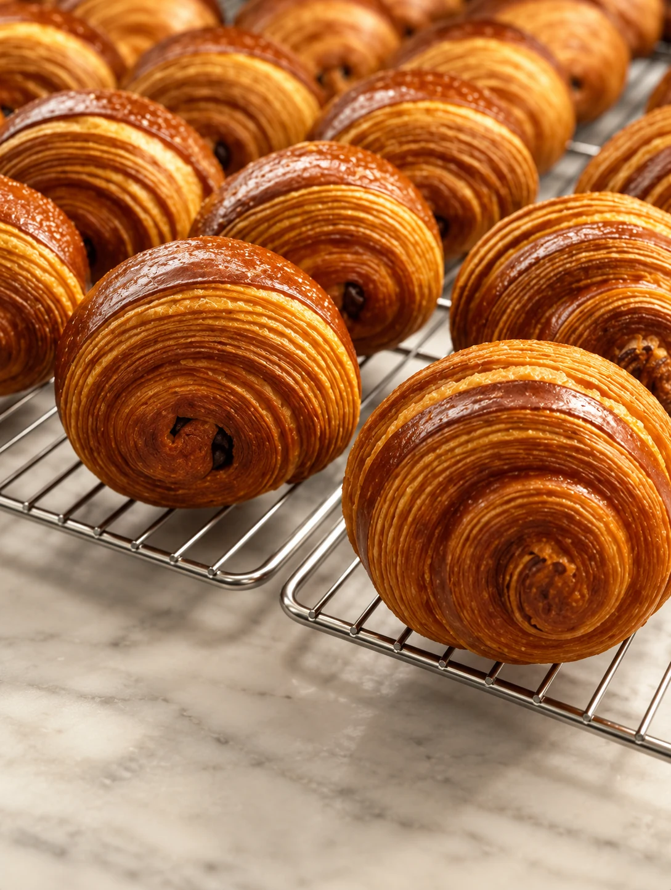

Sul posto o da portare via
Viennoiserie &
Colazione in Caffetteria
Sfogliati a lievito madre da gustare con la caffetteria o da portare via. Dal Croissant classico al Pain au chocolat in tre declinazioni: classico, caramello e lampone.
Il Pain Suisse alla Sacher, il Flan alla vaniglia Haiti e le proposte salate completano il racconto del mattino.
Prenota Viennoiserie